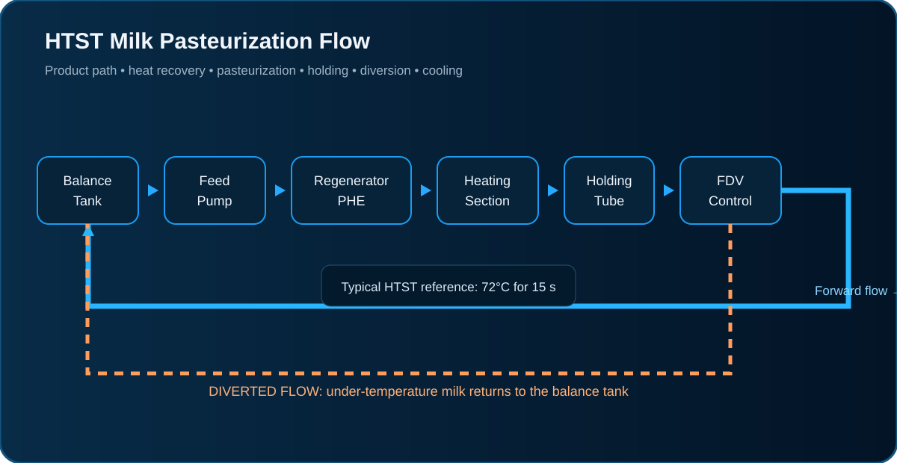
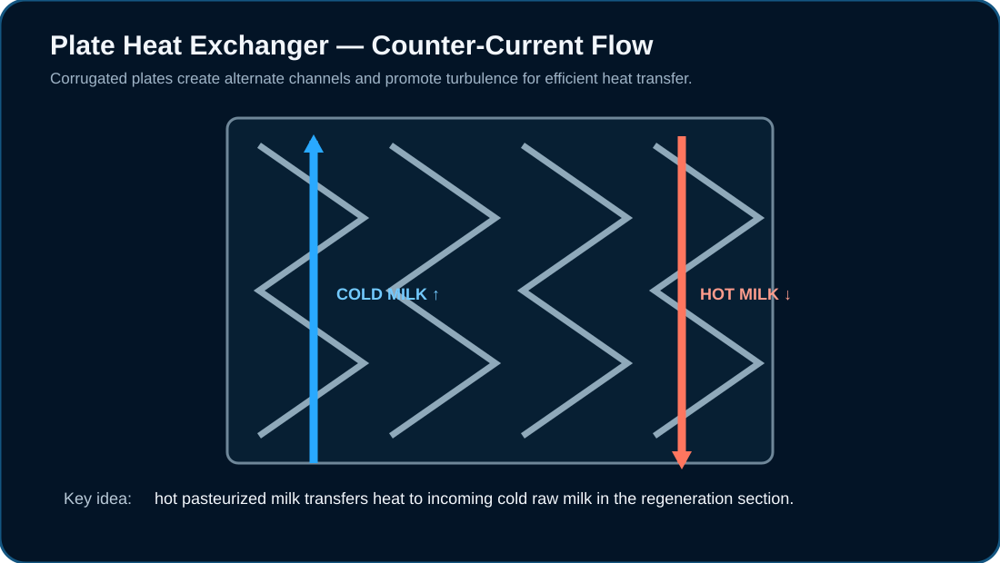
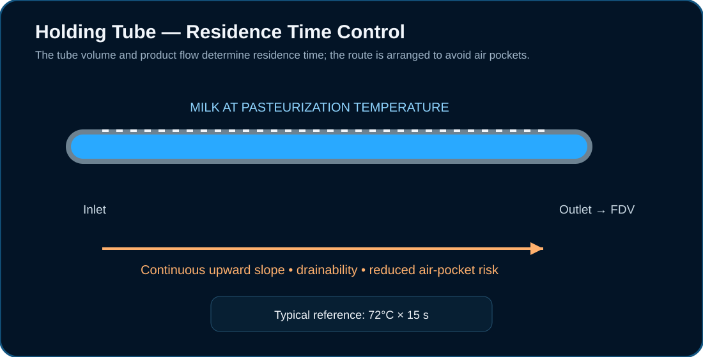
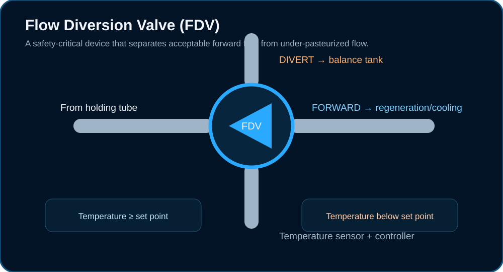

Milk Pasteurizer
Continuous HTST pasteurization uses controlled heating, a defined holding period and rapid cooling to obtain a safe, high-quality product while recovering heat wherever possible.

1. Working Principle
In an HTST system, raw milk is fed continuously through a balance tank and sanitary pump. The milk first gains heat in the regenerative section, reaches the pasteurization temperature in the heating section, passes through a holding tube for the required residence time, and then reaches the flow diversion valve. Milk that satisfies the temperature requirement is allowed to continue through regeneration and final cooling; milk below the set point is diverted back to the balance tank for reprocessing.
2. Plate Heat Exchanger (PHE)
The PHE is the main heat-transfer unit. Thin stainless-steel plates form alternate product and service-fluid channels. Corrugations increase turbulence, improve heat transfer and reduce the thickness of the thermal boundary layer. Counter-current flow allows the available temperature difference to be used efficiently.

Counter-current flow
Cold incoming milk and hot outgoing milk exchange heat through the plate wall in opposite directions.
Complete HTST circuit
Regeneration, heating, holding, diversion and cooling work together as one controlled process.
3. Main Components
- Balance/float tank for buffer storage, stable feed conditions and collection of diverted milk.
- Sanitary feed pump to establish the required product flow.
- Plate heat exchanger with regeneration, heating and cooling sections.
- Holding tube sized for the required residence time at pasteurization temperature.
- Temperature sensor/transmitter and temperature control system.
- Pneumatic flow diversion valve for forward/diverted flow selection.
- Hot-water circuit with circulation pump, heater/steam control and safety devices.
- Booster pump where required to establish the correct pressure relationship across regenerative sections.
- Final cooling circuit, product outlet and downstream pasteurized-product line.
4. Holding Tube & Residence Time
The holding tube provides the defined residence time required for the heat treatment. Its length and internal volume are related to product flow rate and the required holding time. Because velocity is not perfectly uniform across the pipe, the design must ensure that the fastest-moving product particles still receive the required treatment.

where V = required effective holding volume, Q = product flow rate, HT = required holding time and η = design efficiency factor.
The supplied pasteurization material describes a typical efficiency factor in the range of about 0.8–0.9. It also notes that turbulent-flow centreline velocity can be about 1.15–1.20 times average velocity, which is why holding-tube design cannot simply use average residence time without a safety/design allowance.
5. Flow Diversion Valve (FDV)

The FDV is positioned downstream of the holding tube. A temperature-control system monitors the milk condition. When the required temperature is achieved, the valve permits forward flow. If the temperature falls below the set point, the valve diverts the product back to the balance tank instead of allowing it to enter the pasteurized-product route.
6. Temperature & Process Control
Temperature control is achieved by measuring product temperature before the holding tube and adjusting the heating-medium control valve. A temperature recorder can display or record pasteurization temperature and the operating status of the diversion system. Flow control is equally important because holding time depends directly on product flow and holding-tube volume.
- Temperature transmitter/sensor at the critical product-control point.
- Temperature controller acting on the hot-water/steam regulating system.
- Flow measurement/control to maintain the designed product throughput.
- Pressure indicators/transmitters for process monitoring.
- Safety thermal recorder/controller logic for diversion protection.
7. Important Design & Sizing Concepts
For a PHE, the number of plates and section areas depend on product capacity, inlet/outlet temperatures, heat-transfer coefficient, allowable pressure drop, regeneration efficiency and the required heat-transfer duty. Plate count should therefore be calculated from the actual process design rather than selected from a single universal number.
8. Hot-Water Heating Circuit
Hot water is commonly used as the indirect heating medium. Steam heats the circulating hot water through a separate heat exchanger, while a pump circulates the water through the pasteurizer heating section. The circuit can include a steam regulating valve, steam trap, expansion vessel, temperature and pressure indicators, and safety/ventilation devices.
9. Pressure, Flow & Product Safety
- Stable feed flow is essential because product velocity determines residence time in the holding tube.
- Pressure relationships across regenerative sections are part of the contamination-control strategy.
- Pressure drop through plates, fittings, valves and holding tube must be considered when selecting pumps.
- Any abnormal temperature condition should result in diversion rather than release of questionable product.
10. Cooling After Regeneration
Most of the temperature reduction can be obtained by regeneration. The remaining heat is removed in the cooling section using chilled water or another suitable coolant. The supplied material notes that very high regeneration efficiency can leave the product around 8–9°C before the final cooling stage, so a colder cooling medium is required when the final product temperature must approach 4°C.
11. Cleaning & Hygienic Design
The pasteurizer is designed for CIP circulation through product passages, valves, holding tube and associated circuits. Hygienic design requires smooth product-contact surfaces, cleanable connections, proper drainage, controlled flow and avoidance of dead legs or stagnant zones. Plate packs must be maintained correctly so gaskets, plates and passages remain clean and leak-free.
12. Operator Understanding — What to Watch
- If temperature falls below the set point, the product should be diverted.
- If flow increases without a corresponding holding-tube redesign, residence time decreases.
- If PHE pressure drop rises abnormally, investigate fouling, blockage, valve position or flow conditions.
- If regeneration performance falls, external heating and cooling loads increase.
- After CIP, verify correct assembly, valve position, product routing and hygienic integrity before production.